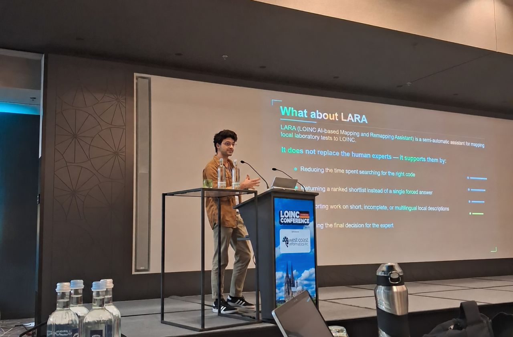
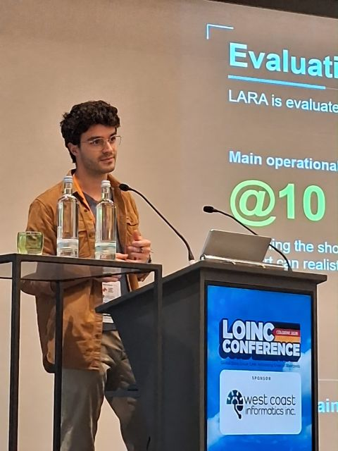

2026
LOINC Conference, Cologne: round table on AI for laboratory test mapping
AI for laboratory test mapping at the LOINC Conference in Cologne
At the LOINC Conference in Cologne I spoke at the round table on mapping laboratory tests, as an AI Engineer in Innovation & Emerging Technologies at Dedalus Italia. I shared experiences and approaches on applying AI to the standardisation of laboratory data.

The problem
Clinical labs name their tests in their own local way. For laboratory data to move between health information systems, each local name has to be mapped to a LOINC code. Done by hand, this is slow and error-prone.
Where AI helps
The round table looked at how AI can support this mapping work and make it simpler, while the contribution of the experts stays fundamental to the decisions.
The community

Cologne was also a chance to talk with the LOINC community, the Regenstrief Institute and international experts, in a setting open to sharing experience and new research directions. Part of the work I presented came from a collaboration with a researcher at IIT-CNR.